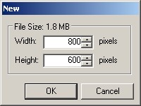

The New Operation (File-->New) allows you to start a fresh
new image. If there is currently an active image, you will be prompted
before it is cleared.
The New Operation (File-->New) allows you to start a fresh
new image. If there is currently an active image, you will be prompted
before it is cleared. 
When you start a new image, you are given the opportunity to alter the default dimensions of 800 by 600 pixels. The raw file size (without compression) is displayed as well.